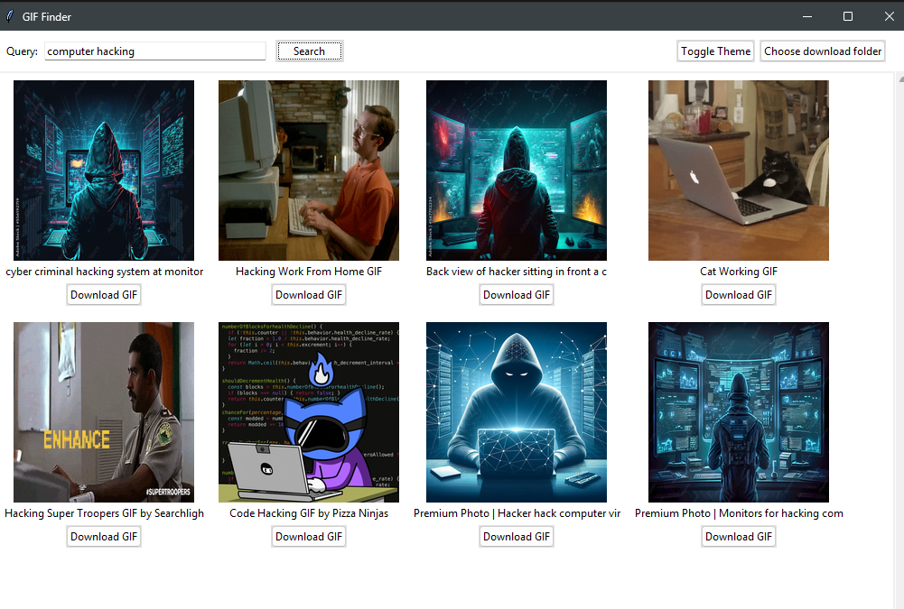
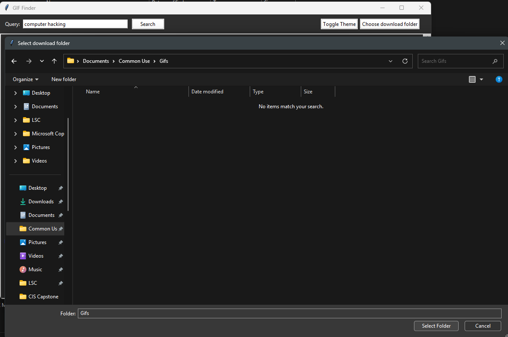
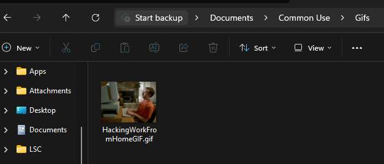

Gif Finder
Multi‑API GIF Search & Download Tool — GUI • APIs • Async • Modular Architecture
Project Overview
Gif Finder is a Python desktop application that lets users search, preview, and download GIFs from multiple online sources. It combines GUI design, API integration, asynchronous performance improvements, and modular architecture to create a smooth, user‑friendly experience.
This project demonstrates full‑stack Python capability: GUI development, API consumption, async threading, file handling, and clean multi‑file architecture.
My Role
I designed and built the entire application, including:
- GUI layout and event handling
- API integration and data parsing
- Async performance improvements
- File handling and GIF standardization
- Modular architecture across multiple Python files
- Error handling, validation, and UX improvements
Technologies Used
- Python 3.14
- Tkinter — GUI framework
- Requests — API calls
- Pillow (PIL) — image handling
- DuckDuckGo Search (ddgs) — alternative GIF source
- ThreadPoolExecutor — async thumbnail loading
- OS / IO / Time — file and system operations
Key Features
- Multi‑API GIF search (Giphy + DuckDuckGo)
- Thumbnail previews in a clean Tkinter GUI
- Async loading for faster performance
- Download manager with custom folder selection
- GIF validation and standardization
- Robust error handling and fallback logic
Technical Challenges & Solutions
- Slow thumbnail loading: solved with ThreadPoolExecutor async loading.
- Inconsistent GIF formats: standardized using Pillow.
- API rate limits: added fallback logic and secondary sources.
- GUI freezing: moved network calls off the main thread.
Results & Impact
The final application is fast, stable, and user‑friendly. It demonstrates strong engineering fundamentals across GUI design, API integration, async performance, and modular architecture.
Example Gif Search

Choosing a Download Folder

Downloaded Gif to Selected Folder

Future Enhancements
- Animated GIF previews inside the GUI
- Light/Dark mode toggle
- User‑selectable API sources
- Batch selection and downloads
- Adjustable result limits (10, 25, 50)
- True asyncio for even faster performance
Reflection
This project pushed me deeper into API design, GUI development, and asynchronous programming. I learned how to structure a multi‑file Python application, handle real‑world data inconsistencies, and optimize performance without sacrificing usability.